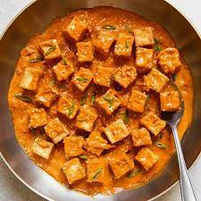

Homepage
How to make spicy tofu?
Description
It's sort of a variation on mapo tofu, a popular Sichuan dish. Garlic is the star in this version, however, and it's also on the milder side. (We use sweet hoisin sauce in addition to spicy bean sauce, and don't use Sichuan peppercorns.) It's also easier to make!

Ingredients
- Tofu
- Minced Beef
- Douban Jiang
- Sichuan Peppercorns
- Cornstarch Slurry
Instructions
- Fry the Sichuan peppercorns in the oil to infuse the aroma
- Cook the minced beef with doubanjiang
- Once the beef is cooked, add the green onions and stir a few times
- Add the water and braise with the cover on
- Drizzle in the cornstarch slurry to thicken the sauce